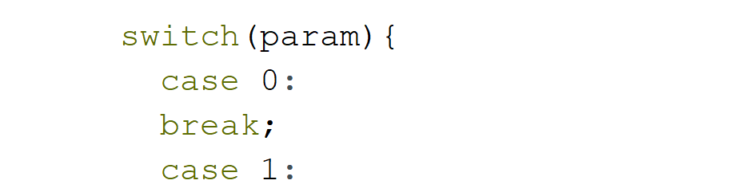

Nombre:Juan Moreta
Curso:Segundo Informatica "A"
Fecha:18/12/2025
Modulos:
Estructura de condicion if:permite que un programa decida si ejecutar una sentencia o un bloque de sentencias en caso de que la condicion sea veradera, o bien si salta su ejecucion, en caso de que la condicion es falsa.
Formato:

Realizar un programa que permita seleccionar aspirantes a las Fuerzas Armadas, cuyos aspirantes deben cumplir con los siguientes requisitos:
Codigo:
Ejercicio 1Parte Ejecutable:
Ejercicio 1 parte ejecutableEstructura de control Case:se refiere a la estructura de control case-switch, un menu para seleccionar varias opciones basados en el valor de una variable.
Formato:

Realizar un programa que al ingresar usuario y contraseña pueda seleccionar unas de estas 4 opciones:
1.Seleccione inicial de un color.
2.Valor de compra y determinar el tipo de moneda de pago para realizar un descuento.
3.Ubicar la candidad en miles del numero 1-3:
4.Salir
Codigo:
Ejercicio 2Parte ejecutable:
Ejercicio 2Estructura de repeticion while:es una estructura de control repetitiva que ejecuta el programa siempre y cuando se cumpla la condicion especificada revisandola a inicio de cada interaccion.
Formato:

Realizar un programa en el que identifique cuantos estrudiantes hay en un curso segun su genero.
Codigo:
Ejercicio 3Parte ejecutable:
Ejercicio 3Estructura de repeticion Do while:es una estructura de repeticion que garantiza la ejecucion de programa al menos una vez, ya que la condicion se evalua despues de ejecutar el programa.
Formato:

Realizar un programa que sume numeros impares hasta que el numero 0 (cero) sea introducido.
Codigo:
Ejercicio 4Parte ejecutable:
Ejercicio 4Estructura de repeticion Do while:es una estructura de repeticion que garantiza la ejecucion de programa al menos una vez, ya que la condicion se evalua despues de ejecutar el programa.
Estructura de de control "Case":se refiere a la estructura de control case-switch, un menu para seleccionar varias opciones basados en el valor de una variable.
Realizar un programa que al ingresar usuario y contraseña pueda seleccionar unas de estas 4 opciones:
Nota: Es el ejercicio Nº 2 incluyendo la estrucura Do while.
1.Seleccione inicial de un color.
2.Valor de compra y determinar el tipo de moneda de pago para realizar un descuento.
3.Ubicar la candidad en miles del numero 1-3:
4.Salir
Codigo:
Ejercicio 5Parte ejecutable:
Ejercicio 5jugadores cada uno, cuyo objetivo es introducir un balon en la porteria del
equipo contrario para marcar un gol. Es el deporte mas popular del mundo y
se juega principalmente con los pies, sin poder tocar el balon con las manos
o los brazos, excepto el portero dentro de su area.
Equipos como:
Real MadridFC
BarcelonaSC